全文翻译
摘要
去噪扩散概率模型（DDPMs）能够生成高质量的样本，如图像和音频样本。然而，DDPMs需要数百到数千次迭代才能生成最终样本。此前有多项研究通过调整方差调度（如改进的去噪扩散概率模型）或去噪方程（如去噪扩散隐式模型（DDIMs））成功加速了DDPMs。但是，这些加速方法无法保持样本质量，甚至在高加速比下会引入新的噪声，这限制了它们的实用性。为了在保持样本质量的同时加速推理过程，我们提出了一种全新的观点，即应将DDPMs视为在流形上求解微分方程。基于这一观点，我们提出了适用于扩散模型的伪数值方法（PNDMs）。具体而言，我们明确了如何在流形上求解微分方程，并证明了DDIMs是伪数值方法的简单情形。我们将几种经典的数值方法转换为相应的伪数值方法，发现伪线性多步法在大多数情况下表现最佳。根据实验结果，直接使用在Cifar10、CelebA和LSUN上预训练的模型时，PNDMs仅需50步就能生成比1000步DDIMs质量更高的合成图像（加速20倍），显著优于250步的DDIMs（在FID指标上提高约0.4），并且在不同的方差调度下具有良好的泛化性。
1 引言
去噪扩散概率模型（DDPMs）（Sohl-Dickstein等人，2015；Ho等人，2020）是一类生成模型，它通过一个迭代去噪过程来对数据分布进行建模，该去噪过程与多步加噪过程相反。DDPMs已成功应用于多种领域，包括图像生成（Ho等人，2020；Song等人，2020b）、文本生成（Hoogeboom等人，2021；Austin等人，2021）、3D点云生成（Luo和Hu，2021）、文本转语音（Kong等人，2021；Chen等人，2020）以及图像超分辨率（Saharia等人，2021）。与生成对抗网络（GANs）（Goodfellow等人，2014）不同，GANs需要根据不同的模型结构和数据集仔细调整超参数，而DDPMs可以使用相似的模型结构，并通过一个简单的去噪目标进行训练，使模型适应数据中的噪声。为了生成样本，迭代去噪过程从白噪声开始，根据模型在每一步预测的噪声逐步将其去噪，使其转化到目标域。然而，DDPMs的一个关键缺点是，它需要数百到数千次迭代才能生成高质量的样本，并且每一步至少需要通过网络一次，这使得生成大量样本的过程极其缓慢，甚至不可行。相比之下，GANs仅需通过网络一次。
最近有许多研究致力于提高去噪过程的速度。一些研究寻找更好的方差调度，包括Nichol和Dhariwal（2021）以及Watson等人（2021）。一些研究则专注于改变推理方程，包括Song等人（2020a）和Song等人（2020b）。去噪扩散隐式模型（DDIMs）（Song等人，2020a）依赖非马尔可夫过程，通过每次迭代执行多个步骤来加速去噪过程。概率流（PFs）（Song等人，2020b）在去噪过程和求解常微分方程之间建立了联系，并使用微分方程的数值方法来加速去噪过程。此外，我们在附录A.1中介绍了更多相关研究。然而，DDPMs与数值方法（例如前向欧拉法、线性多步法和龙格 - 库塔法（Timothy，2017））之间的这种直接联系在速度和效果方面都存在不足（见第3.1节）。一些数值方法，如前向欧拉法，虽然简单直接，但只能以牺牲质量为代价来提高速度。一些数值方法，如龙格 - 库塔法，可以在不损失质量的情况下加速反向过程，但它们在每一步都需要沿着神经网络向前传播更多次。此外，我们还注意到，数值方法在高加速比下会引入明显的噪声，这使得高阶数值方法（例如龙格 - 库塔法）甚至比DDIMs的效果更差。Salimans和Ho（2022）也提到了这一现象。为了找出经典数值方法性能下降的原因，我们进行了一些分析，发现经典数值方法可能会采样远离数据主要分布区域的数据，并且DDPMs的推理方程在最后几步不满足数值方法的一个必要条件（见第3.2节）。
| 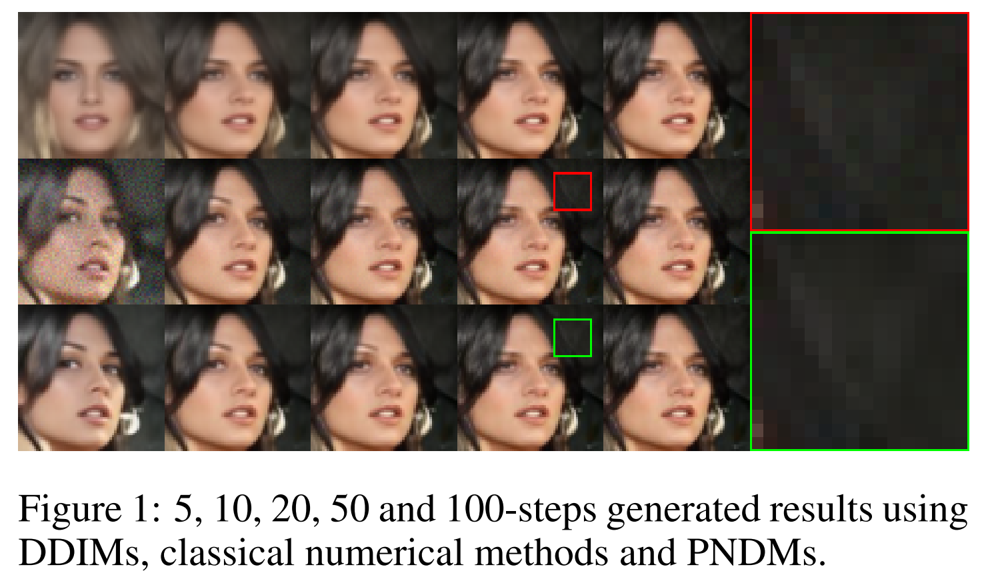 |
|---|
| 图1：使用DDIMs、经典数值方法和PNDMs生成的5步、10步、20步、50步和100步的结果 |
为了解决这些问题，我们设计了一种新的数值方法，称为适用于扩散模型的伪数值方法（PNDMs），用于在$\mathbb{R}^n$中的特定流形（即数据的高密度区域）上生成样本。我们首先直接且自洽地计算扩散模型的相应微分方程，这在DDPMs和数值方法之间建立了理论联系。考虑到经典数值方法不能保证在特定流形上生成样本，我们基于理论分析提出了全新的伪数值方法。我们还发现DDIMs是伪数值方法的简单情形，这意味着我们也为更好地理解DDIMs提供了一种新途径。此外，我们发现伪线性多步法在相似生成质量下是扩散模型最快的方法。
此外，我们对新理论进行了详细的理论分析，并给出了可视化结果以直观地支持我们的理论。根据实验，我们的方法具有以下几个优点：
- 我们的方法成功结合了DDIMs和高阶数值方法的优点。我们从理论上证明了新方法PNDMs是二阶收敛的，而DDIMs是一阶收敛的，这使得PNDMs在Cifar10和CelebA数据集上能够在不损失质量的前提下加速20倍。
- 我们的方法可以在更短的采样时间内降低预训练模型的最佳FID（弗雷歇 inception距离）。在Cifar10和CelebA数据集上，仅需250步，我们的新去噪过程就能将最佳FID降低约0.4。我们在CelebA数据集上实现了2.71的新SOTA（最优）FID分数。
- 我们的方法在不同的方差调度下都能很好地工作，这意味着我们的方法具有良好的泛化性，可以与那些引入更好方差调度的研究一起使用，以进一步加速去噪过程。
2 背景
在本节中，我们介绍一些背景知识。首先，我们阐述对DDPMs的经典理解。然后，基于Song等人（2020b）的研究，我们给出另一种理解，这启发我们使用数值方法加速扩散模型的去噪过程。之后，我们介绍本文后续用到的一些数值方法的背景知识。
2.1 去噪扩散概率模型
DDPMs通过迭代去噪过程，将数据分布从高斯分布建模为图像分布。设$x_0$为一幅图像，那么扩散过程是一个马尔可夫过程，其反向过程与扩散过程形式相似，满足：
这里，$\beta_t$控制数据添加噪声的速度，称为方差调度。$N$是去噪过程的总步数。$\mu_{\theta}$和$\beta_{\theta}$是两个神经网络，$\theta$是它们的参数。
Ho等人（2020）对$\mu_{\theta}$和$\beta_{\theta}$进行了一些统计估计。根据条件高斯分布的性质，我们有：
这里，$\alpha_t = 1 - \beta_t$，$\overline{\alpha}_t = \prod_{i = 1}^{t}\alpha_i$，$\overline{\mu}_t = \frac{\sqrt{\alpha_{t - 1}}\beta_t}{1 - \overline{\alpha}_t}x_0 + \frac{\sqrt{\alpha_t}(1 - \overline{\alpha}_{t - 1})}{1 - \overline{\alpha}_t}x_t$，$\overline{\beta}_t = \frac{1 - \overline{\alpha}_{t - 1}}{1 - \overline{\alpha}_t}\beta_t$。然后，本文设定$\beta_{\theta} = \overline{\beta}_t$，并设计了一个目标函数来帮助神经网络表示$\mu_{\theta}$。
目标函数：目标函数定义为：
这里，$x_t(x_0, \epsilon) = \sqrt{\overline{\alpha}_t}x_0 + \sqrt{1 - \overline{\alpha}_t}\epsilon$，$\epsilon \sim N(0, 1)$，$\epsilon_{\theta}$是对噪声$\epsilon$的估计。$\mu_{\theta}$与$\epsilon_{\theta}$的关系为$\mu_{\theta} = \frac{1}{\sqrt{\alpha_t}}(x_t - \frac{\beta_t}{\sqrt{1 - \overline{\alpha}_t}}\epsilon_{\theta})$。由于$\epsilon \sim N(0, 1)$，我们假设$\epsilon_{\theta}$的均值和方差分别为0和1。
2.2 随机微分方程
根据Song等人（2020b）的研究，对DDPMs还有另一种理解。扩散过程可以看作是求解某个随机微分方程$dx = (\sqrt{1 - \beta(t)} - 1)x(t)dt + \sqrt{\beta(t)}dw$。根据Anderson（1982）的研究，去噪过程也满足一个类似的随机微分方程：
这是方差保持随机微分方程（VP-SDEs）。这里，我们将$t$的定义域从$[1, N]$变为$[0, 1]$。当$N$趋于无穷时，$\{\beta_i\}_{i = 1}^{N}$，$\{x_i\}_{i = 1}^{N}$变为$[0, 1]$上的连续函数$\beta(t)$和$x(t)$。Song等人（2020b）还表明，该方程存在一个常微分方程（ODE）版本，其边际概率密度与方程（4）相同：
这个没有随机项的不同去噪方程与相同的扩散方程一起构成了概率流（PFs）。这两个去噪方程为我们展示了一种新的可能性，即可以使用数值方法加速反向过程。据我们所知，DDIMs首先尝试去除这个随机项，所以PFs也可以看作是DDIMs的加速版本，而VP-SDEs是DDPMs的加速版本。
2.3 数值方法
许多经典的数值方法可用于求解常微分方程，包括前向欧拉法、龙格 - 库塔法和线性多步法（Timothy，2017）。
- 前向欧拉法：对于满足$\frac{dx}{dt} = f(x, t)$的某个微分方程，最基本的数值方法是前向欧拉法，满足$x_{t + \delta} = x_t + \delta f(x_t, t)$。
- 龙格 - 库塔法：龙格 - 库塔法在每一步使用更多信息，因此可以达到更高的精度。龙格 - 库塔法满足：
- 线性多步法：线性多步法是另一种数值方法，满足：
3 用于DDPM的伪数值方法
在本节中，我们首先计算扩散模型相应的微分方程，以在DDPM和数值方法之间建立直接联系。作为一个附带好处，我们可以直接使用DDPM的预训练模型。在建立了这种联系之后，我们详细分析经典数值方法的弱点。为了解决经典数值方法中存在的问题，我们深入研究数值方法的结构，将其方程分为梯度部分和转移部分，并通过引入非线性转移部分来定义伪数值方法。我们发现DDIM可以被视为简单的伪数值方法。然后，我们探讨不同数值方法的优缺点，并选择线性多步法来提高数值方法的速度。最后，我们总结研究结果和分析，并提出适用于扩散模型的新型伪数值方法（PNDM），它结合了我们提出的转移部分和线性多步法的梯度部分。此外，我们分析伪数值方法的收敛阶数，从理论上证明我们方法的有效性。
3.1 公式转换
根据Song等人（2020a）的研究，DDPM和DDIM的反向过程满足：
这里，$\sigma_{t}$控制随机噪声的比例。如果$\sigma_{t}=1$，公式（8）代表DDPM的反向过程；如果$\sigma_{t}=0$，这个公式代表DDIM的反向过程。只有当$\sigma_{t}=0$时，这个公式才会去掉随机项，成为某个常微分方程的离散形式。从理论上讲，可用于带随机项微分方程的数值方法是有限的。Song等人（2020b）在这种情况下已经做了充分的研究。从经验上看，Song等人（2020a）已经表明，当总步数相对较少时，DDIM具有更好的加速效果。因此，我们的工作集中在$\sigma_{t}=0$的情况。
为了找到公式（8）相应的常微分方程，我们根据Song等人（2020a）的方法，用连续版本$t - \delta$替换离散的$t - 1$，并将这个公式转化为微分形式，即从公式两边减去$x_{t}$：
因为$\delta$是一个从0到$t$的连续变量，我们现在可以计算生成数据$x_{t}$的导数，得到$\lim_{\delta \to 0}\frac{x_{t}-x_{t - \delta}}{\delta}=-\overline{\alpha}’(t)\left(\frac{x(t)}{2\overline{\alpha}(t)}-\frac{\epsilon_{\theta}(x(t), t)}{2\overline{\alpha}(t)\sqrt{1-\overline{\alpha}(t)}}\right)$。这里，$\overline{\alpha}(t)$是$\{\overline{\alpha}_{i}\}_{i = 1}^{N}$的连续版本，类似于$x(t)$的定义。因此，当$\delta$趋于0时，公式（9）相应的常微分方程为：
3.2 经典数值方法
得到目标常微分方程后，最直接的求解方法是使用经典数值方法。然而，我们注意到经典数值方法在高加速比下会引入明显的噪声，使得高阶数值方法（如Runge - Kutta法）甚至比DDIM的效果更差。Salimans和Ho（2022）也提到了这种现象。为了更好地使用数值方法，我们分析公式（10）与常见微分方程之间的差异，发现直接将数值方法应用于扩散模型时存在两个主要问题。
第一个问题是神经网络$\epsilon_{\theta}$和公式（10）仅在有限区域内有良好定义。公式（2）表明数据$x_{t}$是沿着一条接近弧线的曲线生成的。根据图2，大多数$x_{t}$集中在宽度约为0.1的带状区域内，即图2中的红色区域。这意味着在远离该区域的地方，神经网络$\epsilon_{\theta}$无法获得足够的样本以成功拟合噪声。因此，$\epsilon_{\theta}$和包含$\epsilon_{\theta}$的公式（10）仅在这个有限区域内有良好定义。然而，所有经典数值方法都是沿着直线生成结果，而不是弧线。生成过程可能会生成远离定义良好区域的样本，从而引入新的误差。在4.3节中，我们将给出更多可视化结果来支持这一点。
| 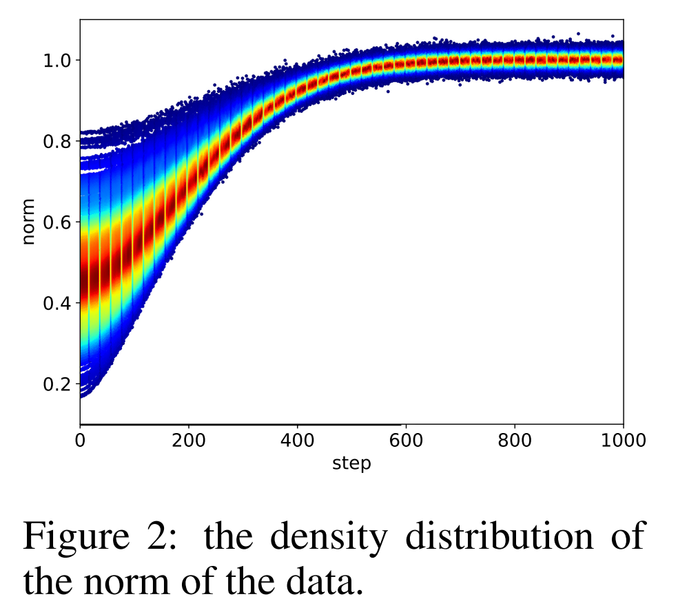 |
|---|
| 图2：数据范数的密度分布 |
第二个问题是公式（10）在大多数情况下是无界的。我们发现，对于大多数线性方差调度$\beta_{t}$，当$t$趋于0时，公式（10）趋于无穷（见附录A.4），这不符合2.3节中提到的数值方法的条件。这是一个明显的理论缺陷，而以前的研究并未对此进行探讨。相反，在原始的DDPM和DDIM中，随着索引$t$趋于0，对样本$x_{t}$和数据中噪声$\epsilon_{\theta}$的预测越来越精确（见附录A.5）。这意味着原始的扩散模型在最后几步不会产生显著误差，而对公式（10）使用数值方法却会产生误差。这解释了为什么DDIM比高阶数值方法表现更好。
3.3 流形上的伪数值方法
上述第一个问题表明，我们应该尝试在特定的流形上解决问题。这里，目标流形是DDPM数据$x_{t}$的高密度区域，由$x_{t}(x_{0},\epsilon)=\sqrt{\overline{\alpha}_{t}}x_{0}+\sqrt{1-\overline{\alpha}_{t}}\epsilon$ 定义，其中$\epsilon \sim N(0,1)$。Ernst和Gerhard（1996）展示了几种用于求解具有解析表达式流形上微分方程的数值方法。不幸的是，很难使用上述流形表达式。因为在反向过程中我们不知道目标$x_{0}$，并且随机项$\epsilon$也很难处理。
在本文中，我们设计了一种不同的方法，使去噪过程的新方程更符合原始DDIM的方程，从而使它们的结果具有相似的数据分布。首先，我们将经典数值方法分为两部分：梯度部分和转移部分。梯度部分决定每一步的梯度，而转移部分生成下一步的结果。例如，线性多步法可以分为梯度部分$f’=\frac{\delta}{24}(55f_{t}-59f_{t - \delta}+37f_{t - 2\delta}-9f_{t - 3\delta})$和转移部分$x_{t + \delta}=x_{t}+\delta f’$。所有经典数值方法都具有相同的线性转移部分，而梯度部分不同。
我们将使用非线性转移部分的数值方法定义为伪数值方法。一个理想的转移部分应具有这样的特性：当梯度部分的结果精确时，转移部分的结果尽可能接近流形，并且该结果的误差尽可能小。我们发现公式（9）满足这一特性。
属性3.1：如果$\epsilon$是$x_{t}$中的精确噪声，那么根据公式（9）得到的$x_{t - \delta}$的结果也是精确的。我们将此属性的证明放在附录A.5中。因此，我们使用：
作为转移部分，$\epsilon_{\theta}$作为梯度部分。也就是说，如果$\epsilon_{\theta}$是精确的，那么$x_{t - \delta}$的结果也是精确的，这意味着$\epsilon_{\theta}$可以确定去噪过程的方向以生成最终结果。因此，这样的选择也满足梯度部分的定义。现在，我们有了梯度部分$\epsilon_{\theta}$和转移部分$\phi$。
这种组合成功解决了上述两个问题。首先，我们的新转移部分不会引入新的误差。这个属性还意味着它将下一步的结果保持在目标流形上，因为生成远离流形的样本是一种误差。这表明我们解决了第一个问题。其次，在上述小节中我们知道，在反向过程中$\epsilon_{\theta}$的预测越来越精确。并且我们的新转移部分可以根据$\epsilon_{\theta}$的精确预测生成精确的结果。因此，使用伪数值方法时，我们的生成结果越来越精确，而经典数值方法在最后几步会引入明显的误差。这表明我们也解决了第二个问题。我们还发现，它们的组合$\phi(x_{t},\epsilon_{\theta}(x_{t},t),t,t - 1)$正是DDIM使用的推理方程，所以DDIM是伪数值方法的一个简单案例。在这里，我们将DDIM定义为DDIM*，强调它是一种伪数值方法。
3.4 梯度部分
由于我们将数值方法分为两部分，所以即使我们改变了推理方程的转移部分，也可以自由地使用不同经典数值方法的相同梯度部分（例如线性多步法）。我们的理论分析和实验表明，不同经典方法的梯度部分都能与我们的新转移部分很好地配合（见3.6节、4.2节）。通过使用线性多步法的相同梯度部分，我们得到：
通过使用龙格 - 库塔法的相同梯度部分，我们得到：
将公式（12）和（13）简记为$x_{t + \delta}, e_{t} = PLMS(x_{t},\{e_p\}_{p < t}, t, t + \delta)$，$x_{t + \delta}, e_{t}^{1} = PRK(x_{t}, t, t + \delta)$。
这里，我们提供了三种伪数值方法。虽然高阶数值方法可以加速去噪过程，但有些方法可能需要在每一步多次计算梯度部分$\epsilon_{\theta}$，如龙格 - 库塔法。沿着神经网络向前传播四次会使去噪过程变慢。然而，我们发现线性多步法可以重复使用$\epsilon_{\theta}$的结果四次，并且每一步只计算一次$\epsilon_{\theta}$。理论分析表明，龙格 - 库塔法和线性多步法具有相同的收敛阶数和相似的结果。
因此，我们使用线性多步法的梯度部分和新的转移部分作为扩散模型的主要伪数值方法（PNDM）。在表1中，我们展示了不同数值方法之间的关系。在这里，我们可以看到PNDM结合了高阶经典数值方法（在梯度部分）和DDIM（在转移部分）的优点。
| 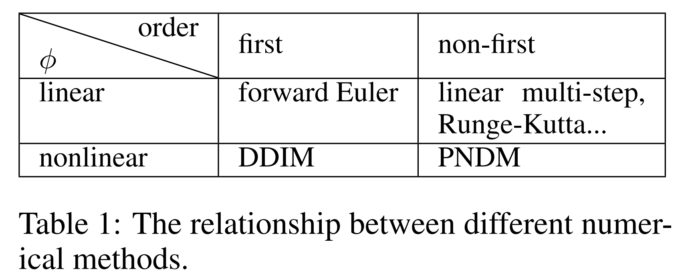 |
|---|
| 表1：不同数值方法之间的关系 |
3.5 算法
现在我们可以给出DDIM去噪过程的完整算法。根据Song等人（2020a）的研究，原始方法的算法如算法1所示。我们新的PNDM算法使用伪线性多步法和伪龙格 - 库塔法，如算法2所示。这里，我们最初不能使用线性多步法，因为线性多步法不能自动开始，它至少需要前三个步骤的信息才能生成结果。所以我们使用龙格 - 库塔法计算前三个步骤的结果，然后使用线性多步法计算剩余步骤的结果。
我们还使用两种二阶数值方法的梯度部分得到另一种伪数值方法。我们在附录A.3中介绍这种方法的详细信息。我们将其称为S - PNDM，因为它的梯度部分在每一步使用来自两个步骤的信息。类似地，当我们需要区分时，我们也将第一种PNDM称为F - PNDM，它使用来自四个步骤的数据。
| 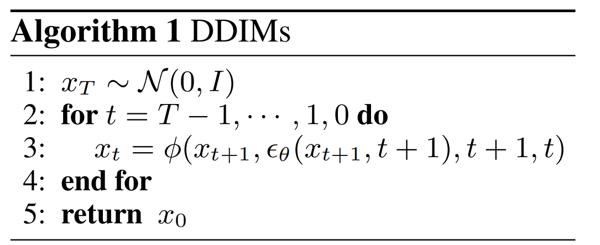 | 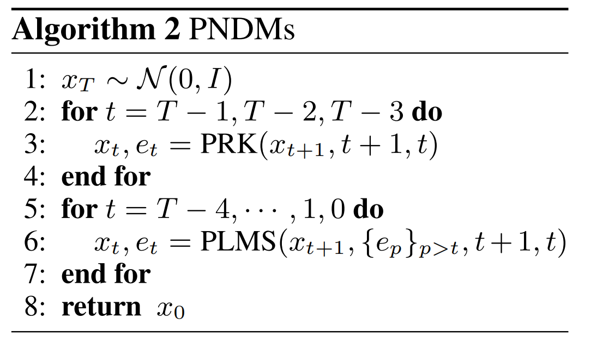 |
|---|---|
| 算法1 | 算法2 |
3.6 收敛阶数
改变数值方法的转移部分可能会引入未知误差。为了从理论上确定新转移部分的影响，我们计算公式（10）的理论结果$x(t + \delta)$与新方法之间的局部和全局误差，发现$x(t + \delta)-x_{DDIM}(x+\delta)=O(\delta^{2})$，并且：
如果目标常微分方程满足利普希茨条件，并且局部误差$e_{local}=O(\delta^{k})$，那么存在$c$和$h$，使得全局误差$e_{global}$满足$e_{global} \leq C\delta^{k}(1 + e^{h}+e^{2h}+\cdots) \leq C’\delta^{k - 1}$。并且我们知道收敛阶数等于全局误差的阶数。详细证明见附录A.6。因此，我们得到以下属性：
属性3.2：S/F - PNDM具有三阶局部误差，是二阶收敛的。
4 实验
4.1 实验设置
我们在四个数据集上进行无条件图像生成实验：Cifar10（32×32）（Krizhevsky等人，2009年）、CelebA（64×64）（Liu等人，2015年）、LSUN教堂（256×256）和LSUN卧室（256×256）（Yu等人，2016年）。根据3.1节中的分析，我们在实验中可以使用先前研究中的预训练模型。Cifar10、LSUN教堂和LSUN卧室的预训练模型取自Ho等人（2020年），CelebA的预训练模型取自Song等人（2020a）。在这些模型中，总步数N为1000，方差调度采用线性方差调度。我们还使用了一个Cifar10的预训练模型，该模型采用改进的去噪扩散概率模型（iDDPMs，Nichol和Dhariwal，2021年）中的余弦方差调度。
4.2 样本效率和质量
为了分析加速效果，我们在不同数据集上，针对不同步数和不同数值方法（包括DDIMs、S-PNDMs、F-PNDMs以及经典四阶数值方法（FONs），如Runge-Kutta方法和线性多步法）测试Fenchel Inception Distance（FID，Heusel等人，2018年）。在Cifar10和CelebA数据集上，我们首先给出先前研究中DDIMs的结果。然后，我们使用相同的预训练模型测试本文中提到的数值方法，并将结果列在Cifar10/CelebA（线性）中。我们还使用iDDPMs的模型测试非线性方差调度，并将结果列在Cifar10（余弦）中。Song等人（2020b）没有提供概率流（PFs）在不同步数下的详细FID结果，因此我们使用其预训练模型重新测试了这些结果。
- 效率：我们的两个基线方法是DDIM和PF。DDIM是伪数值方法的一个简单示例，而PF是经典数值方法的一种情况。然而，PF使用的模型比DDIM大得多，并且使用了一些技巧来提高样本质量。为了确保实验的公平性，我们对公式（10）使用四阶数值方法，并采用DDIM的模型。在表2中，我们发现当步数较少时，FON的性能有限。相比之下，我们的新方法，包括S-PNDM和F-PNDM，无论使用的步数是多还是少，都能改善生成的结果。根据Cifar10/CelebA（线性）的结果，F-PNDM仅用50步就能实现比1000步DDIM更低的FID，使扩散模型在不损失质量的情况下加速20倍。
| 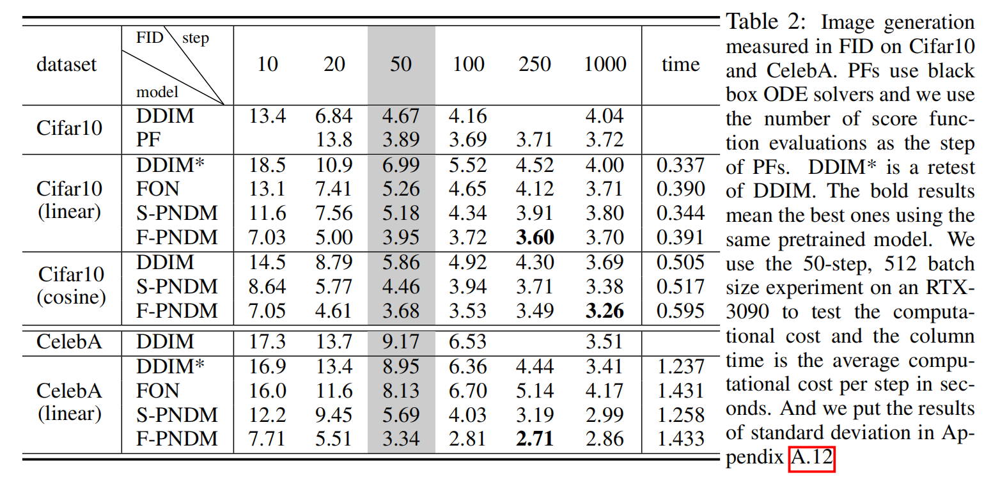 |
|---|
| 表2：Cifar10和CelebA上图像生成的FID测量结果。PFs使用黑盒ODE求解器，我们将分数函数评估的次数作为PFs的步数。DDIM是对DDIM的重新测试。加粗结果表示使用相同预训练模型时的最佳结果。我们在RTX3090上使用50步、512批次大小的实验来测试计算成本，“时间”列是每步的平均计算成本（秒）。标准差结果见附录A.12。* |
我们根据上述Cifar10（线性）的结果绘制了计算成本与FID的折线图（图3）。由于F-PNDM在前三步使用伪Runge-Kutta方法生成结果，所以在最初的几步中它比其他方法慢。因此，S-PNDM最初能实现最佳的FID，随后F-PNDM成为最佳方法，并且加速效果显著。
| 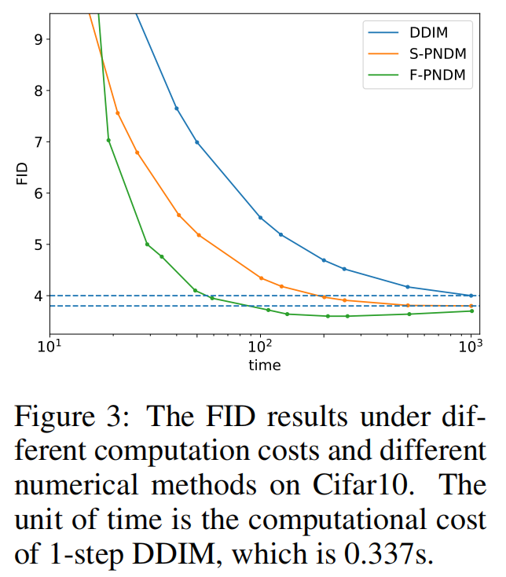 |
|---|
| 图3：Cifar10上不同计算成本和不同数值方法下的FID结果。时间单位是1步DDIM的计算成本，即0.337秒。 |
- 质量：当步数相对较多时，FON的结果与伪数值方法的结果越来越相似。这是因为所有方法都在求解公式（10），它们的收敛结果应该是相同的。然而，从经验上看，伪数值方法在使用大量步数时仍然表现更好。F-PNDM使用预训练模型可以将最佳FID提高约0.4，并在CelebA上实现了2.71的新SOTA FID分数，这表明我们的工作不仅可以加速扩散模型，还能提高样本的顶级质量。我们还注意到，F-PNDM的FID结果在超过250步后趋于收敛，之后FID结果会在某个值附近波动。在我们对LSUN进行测试时，这种现象更加明显（见表5、6）。
根据Cifar10（余弦）的结果，余弦方差调度在使用相对较多的步数时可以降低FID。关于方差调度的更多分析可以在附录A.7中找到。此外，我们在其他数据集上测试了我们的方法，并在附录A.9中提供了FID结果，在附录A.10中提供了图像结果。无论数据集和图像大小如何，我们都可以就我们方法的加速效果和采样质量得出类似的结论。
4.3 流形上的样本
在这里，我们设计了可视化实验来展示新方法的效果，并支持我们的分析。由于难以可视化高维数据，我们使用全局特征范数和局部特征像素的变化来展示不同步数下数据的变化。对于像素，我们随机选择两个位置$p^1$，$p^2$。然后，对于从反向过程得到的一系列图像$x_T$，$x_{T - k}$，…，$x_0$，我们将$x_t$在位置$p^k$的值记为$y_t^k$。接着，我们在$\mathbb{R}^2$中绘制折线$(y_t^1, y_t^2)_{t = T, \cdots}$。对于范数，我们首先统计不同步数下训练数据集范数的分布，并以此制作热图作为背景。之后，我们在这个热图上绘制使用不同方法和步数生成结果的范数。
在图4中，我们可以看到FON可能会远离数据的高密度区域，这解释了为什么FON可能会引入明显的噪声。然而，PNDM可以避免这个问题，并能较好地拟合目标结果。更多支持我们分析的可视化结果可以在附录A.11中找到。此外，我们设计了一个简单示例来在没有神经网络影响的情况下测试新方法，得到了与上述真实情况类似的结论。详细结果见附录A.8。
| 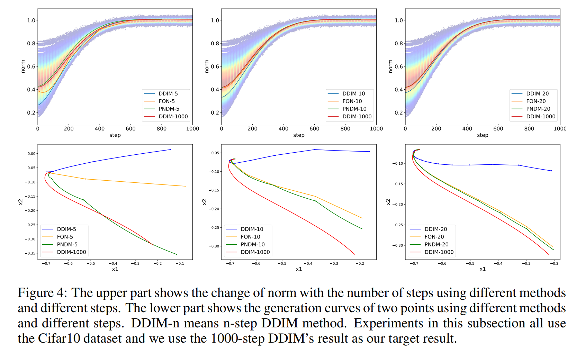 |
|---|
| 图4：上图展示了使用不同方法和不同步数时，范数随步数的变化。下图展示了使用不同方法和不同步数时，两个点的生成曲线。DDIM - n表示n步的DDIM方法。本小节的实验均使用Cifar10数据集，我们将1000步DDIM的结果作为目标结果。 |
5 讨论
在本文中，我们提出了PNDMs，这是一种适用于求解DDPM相应常微分方程的新数值方法。PNDMs能够在不损失质量的前提下，用更少的步骤生成高质量图像。基于这项工作的思路，未来研究可以从以下几个方面进一步探索改进：
- 为PNDMs寻找更优的方差调度：尽管在本研究中我们对线性方差调度和余弦方差调度测试了PNDMs，但可能存在更适合我们所提数值方法的其他方差调度。
- 寻找更高阶收敛的伪数值方法：我们分析了S/F-PNDMs的收敛阶数，它们均为二阶收敛。然而，在大多数情况下，F-PNDMs的FID表现优于S-PNDMs。我们认为这是因为转移部分与目标常微分方程之间的结果存在更高阶的误差，限制了F-PNDMs的收敛阶数。虽然这种由转移部分变化带来的误差是理论上的，且根据公式（11）的性质，它并不影响图像质量，但使转移部分更高阶收敛并探究这种变化的影响仍然是一个有趣的研究方向，值得深入探索。
- 将PNDMs扩展到更广泛的应用中：在证明PNDMs的收敛阶数时，我们发现其他类型的转移部分也可以保持收敛阶数不变，这意味着伪数值方法可以应用于更广泛的领域，比如某些神经常微分方程（Chen等人，2019；Dupont等人，2019）。
A 附录
A.1 相关工作
在过去几年中，去噪扩散概率模型（DDPMs）得到了很好的发展。一些工作致力于提高DDPMs的质量和速度，使其更具实用性。Song等人（2020a）引入了新的推理方程来加速DDPMs。Nichol和Dhariwal（2021）、Watson等人（2021）以及Kong和Ping（2021）选择寻找更好的方差调度来提高图像质量。Vahdat等人（2021）结合了DDPMs和变分自编码器的优点，取得了更好的结果。此外，Kim等人（2021）试图解决DDPMs推理方程在某些情况下无界这一现有瓶颈问题。
Song等人（2020b）发现了DDPMs与噪声条件得分网络（NCSNs，Song和Ermon，2020b）之间的相似性，即它们都使用类似于朗之万动力学的过程来生成样本。因此，一些能够改进NCSNs结果的工作（Song和Ermon，2020a；Kim等人，2021）也可应用于DDPMs。此外，Song等人（2020b）在神经微分方程（Chen等人，2019；Dupont等人，2019）的框架下将DDPMs和NCSNs结合起来。因此，广泛应用于神经微分方程的数值方法也可用于加速DDPMs。我们的工作成功地结合了Song等人（2020a）和Song等人（2020b）的优点。我们使用来自DDIMs的转移部分，并采用来自不同数值方法的不同梯度部分。虽然我们和Song等人（2020b）都求解了由DDPMs导出的特定微分方程，但我们使用了不同的目标方程和数值方法，从而获得了更好的结果。
DDPMs的应用不仅限于无条件图像生成。一些工作已成功将DDPMs应用于各种类型的数据，包括文本转语音（Chen等人，2020；Lam等人，2021）、歌声生成（Liu等人，2021）、3D点云生成（Luo和Hu，2021）、文本生成（Austin等人，2021）。此外，DDPMs也可用于生成条件样本（Jeong等人，2021；Choi等人，2021）。
A.2 方法的收敛阶
我们使用前向欧拉法和线性多步法来说明方法的阶数。假设$x_t$是精确的，并计算$x_{t+\delta}$处的误差。对于前向欧拉法，我们有：
这里，我们假设$f^{\prime \prime}$是连续的，所以$f^{\prime \prime}$在一个闭区域内有界。$x(t+\delta)$是精确结果，$x_{t,\delta}$是从$t$到$t+\delta$的数值结果。
对于线性多步法，我们有：
这里，$b_s$满足$\sum_{s = 1}^{4}b_s = 1$以及对于$j \in \{1,\cdots,3\}$的以下方程：
我们将$x_{t,\delta}$处的误差称为局部误差，将$x_{t + M\delta}$（$M$足够大但有限）处的误差称为全局误差。假设我们方法的局部误差阶数为$k + 1$，并且目标常微分方程满足利普希茨条件，那么：
因此，全局误差比局部误差低一阶。从公式$(15)$可以看出，前向欧拉法的局部误差为$O(\delta^2)$，全局误差为$O(\delta)$，所以我们称它为一阶数值方法。而线性多步法的局部误差为$O(\delta^5)$，全局误差为$O(\delta^4)$，我们称它为四阶数值方法。
此外，假设一个数值方法的全局误差为$k$阶，我们可以计算该数值方法的收敛速度：
这里，$x_{t+T}^{\delta}$是在$t + T$处且每步移动$\delta$的结果。这表明当$\delta \to 0$时，四阶方法比一阶方法能更快地收敛到精确解，这意味着我们可以使用更大的迭代间隔$\delta$来获得相似的全局误差，而更大的迭代间隔意味着我们可以通过更少的迭代次数获得高质量的结果。
A.3 伪二阶方法
我们介绍两种二阶数值方法。第一种是改进的欧拉法，满足：
第二种是另一种线性多步法，称为二阶线性多步法，满足：
相应的伪改进欧拉法满足：
伪二阶线性多步法满足：
类似于得到F - PNDMs的方法，我们将它们结合起来得到S - PNDMs。将公式$(22)$和$(23)$缩写为：
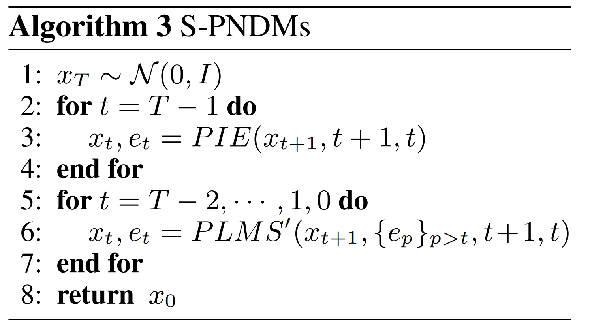
A.4 导数的存在性
因为$\bar{\alpha}_t$通常是通过线性方差调度$\beta_t$相乘得到的。所以我们有：
并且$\bar{\alpha}_0 = 1$，所以$c = 0$。现在我们有：
为了使$\lim_{\delta \to 0}\frac{x_{t-\delta}-x_t}{\delta}|_{t = 0}$有意义，$b$必须等于0，否则$(2at + b)\frac{\epsilon_{\theta}(x_t,t)}{\sqrt{1-\bar{\alpha}_t}}$将趋于无穷大。这是一个大多数方差调度都不满足的强条件。在实践中，DDPMs可以非常自由地选择方差调度。这意味着直接将DDPMs视为常微分方程是不合适的，并且存在理论缺陷。
A.5 $t$、$\epsilon_{\theta}$和$x_t$之间的关系
$t$和$\epsilon_{\theta}$之间的关系。在图5中，我们可以看到，当步长索引趋于0时，无论是在$\epsilon_{\theta}$域还是样本/图像域，去噪过程都趋于收敛。因此，我们可以说，当步长（即$t$）趋于0时，噪声变得越来越精确。
| 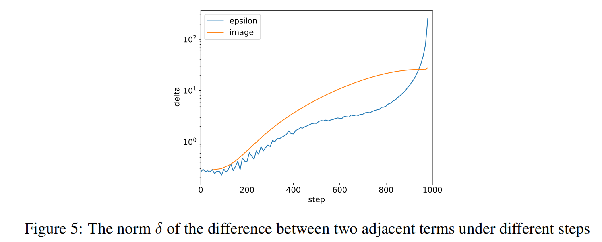 |
|---|
| 图5：不同步数下相邻两项差值的范数$δ$ |
$\epsilon_{\theta}$和$x_t$之间的关系。为了证明性质3.1，假设$x_t=\sqrt{\bar{\alpha}_t}x_0+\sqrt{1-\bar{\alpha}_t}\epsilon$，$NN$是神经网络且$\epsilon_{\theta}=NN(x_t,t)$。因为我们假设梯度部分是精确的，那么我们有$\epsilon_{\theta}=\epsilon$。那么对于所有$t’ \leq t$，我们有：
这里，我们可以发现$x_{t’}=\sqrt{\bar{\alpha}_{t’}}x_0+\sqrt{1-\bar{\alpha}_{t’}}\epsilon$也是精确的，所以性质3.1成立。
A.6 伪方法的阶数分析
为了便于理论分析，我们对问题进行了推广。设$\phi(x(t),\epsilon,t,\delta)=f(x(t),t,\delta)+g(t,\delta)\epsilon(x(t),t)$，并且我们有性质$f(x(t),t,0)=g(t,0)=0$。那么我们有：
现在，公式$(10)$成为这个更一般版本的一个特殊情况，在这个特殊情况下，我们有：
现在，我们计算S - PNDMs的局部误差。我们首先计算不同数值方法的理论结果和数值结果。我们有：
并且：
然后我们计算理论结果和数值结果之间的差异。我们有：
在这种特殊情况下，我们计算公式（31）中所需的一些项的导数。我们有：
现在我们可以计算方程(31)的最终结果。我们将其分成三个部分以及前两项的值。我们有：
以及
最后，我们得到公式（31）的最终结果：
F - PNDMs收敛阶的计算与之类似，在此我们省略这部分内容。因此，性质3.2成立。
A.7 方差调度
根据表2中Cifar10（余弦）的数据，伪数值方法（PNDMs）可用于线性方差调度和余弦方差调度。然而，我们也注意到，当使用相对较大的生成步数时，余弦方差调度能使FID（Fenchel Inception Distance，芬切尔 - inception距离）更低，但在步数较少时，这种效果有限。F - PNDM会利用连续四个步骤的信息，因此对于F - PNDM而言，方差调度的平滑性比DDIM更为重要。通过该实验可知，我们的研究成果可与关注方差调度的研究相结合，进一步提升加速效果。不过，更适合伪数值方法的方差调度仍有待后续研究探索。
A.8 简单示例
在这里，我们设计了一个简单示例，用于在不受神经网络影响的情况下测试我们的新方法。我们随机生成初始输入$x_1 = (m_1, m_2)$，其中$m_i \sim U(0, 1)$（$m_i$服从区间$(0, 1)$上的均匀分布），并使用一个简单的解析方程$\epsilon_{\theta}(x) = (\sin x[0], \cos x[1])$来替代实际情况中的神经网络。保持公式（11）中的$\phi$不变，并令$\bar{\alpha}_{t}=\alpha(t)=1 - t$，那么我们得到：
在这里，我们使用三种不同的数值方法来生成$x_0$。
对于DDIM，我们有：
对于四阶数值方法（FON），根据公式（10），我们有：
对于F - PNDM，我们有：
然后我们绘制相应的生成曲线，如图6所示。我们发现结果与实际情况相似。这里的主要区别在于，FON可以修正其结果，而在实际情况中却不能。原因是在简单示例中梯度处处有定义，而在实际情况中，梯度仅在DDPMs的数据$x_t$的高密度区域才有意义。
| 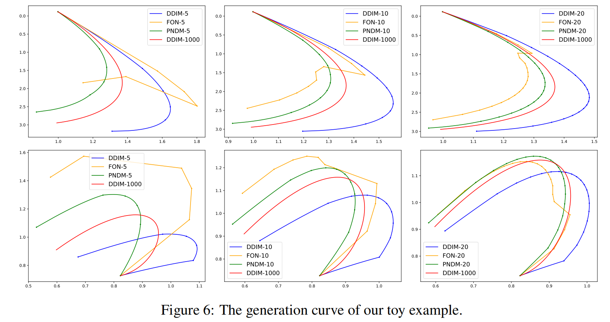 |
|---|
| 图6：我们简单示例的生成曲线。 |
A.9 更多FID结果
在此，我们在表3、表4、表5和表6中提供了在Cifar10、CelebA、LSUN教堂和LSUN卧室数据集上更详细的FID（Fenchel Inception Distance，芬切尔 - inception距离）结果。
| 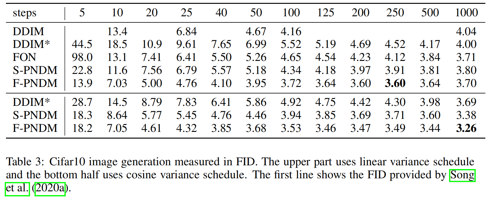 |
|---|
| 表3：在Cifar10数据集上以FID（Fenchel Inception Distance，芬切尔 - inception距离）衡量的图像生成结果。表格上半部分使用线性方差调度，下半部分使用余弦方差调度。第一行展示的是Song等人（2020a）提供的FID值。 |
 |
|---|
| 表4：在CelebA数据集上以FID衡量的图像生成结果。所有结果均采用线性方差调度。 |
| 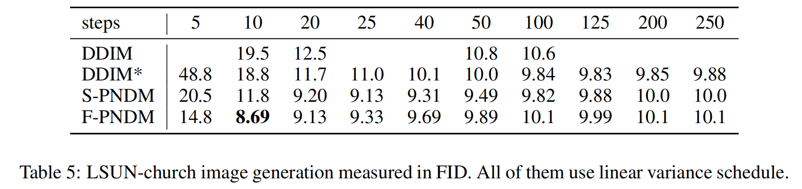 |
|---|
| 表5：以FID衡量的LSUN教堂图像生成结果。所有结果均采用线性方差调度。 |
| 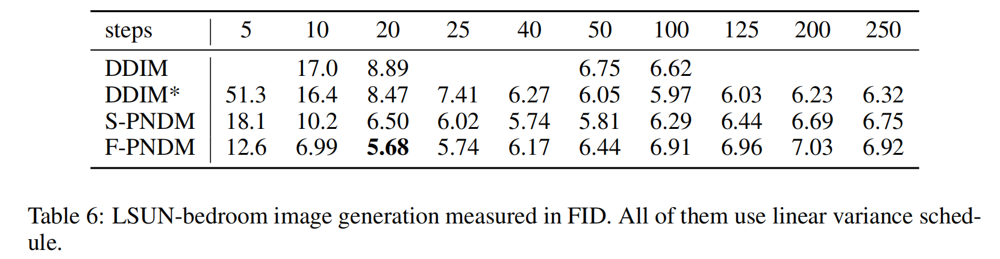 |
|---|
| 表6：在LSUN卧室数据集上以FID衡量的图像生成结果。所有结果均采用线性方差调度。 |
A.10更多图像结果
在此，我们在图7、图9、图8、图10、图11和图12中展示了在Cifar10、CelebA、LSUN教堂和LSUN卧室数据集上生成的更多图像。
 |
|---|
| 图7：使用DDIMs、经典数值方法和PNDMs在Cifar10上生成的5、10、20、50、100、250、500步的结果 |
| 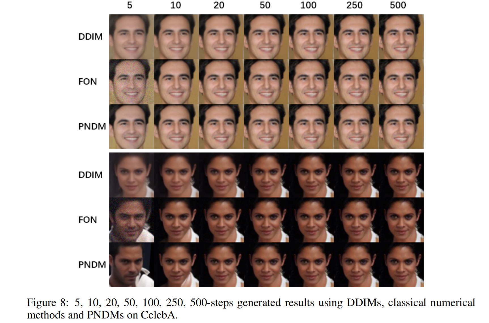 |
|---|
| 图8：使用DDIMs、经典数值方法和PNDMs在CelebA上生成的5、10、20、50、100、250、500步的结果 |
| 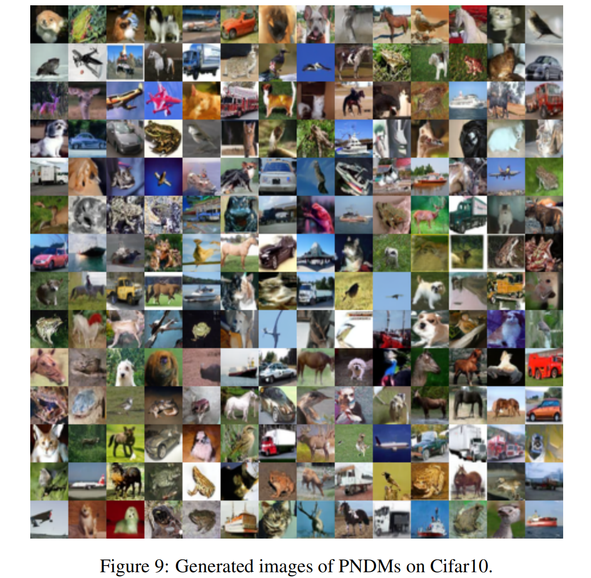 |
|---|
| 图9：PNDMs在Cifar10上生成的图像 |
| 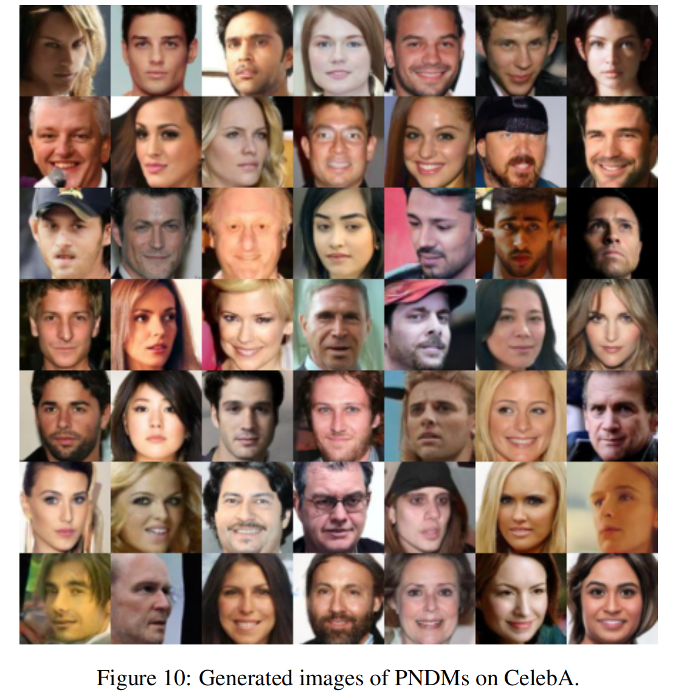 |
|---|
| 图10：PNDMs在CelebA上生成的图像 |
| 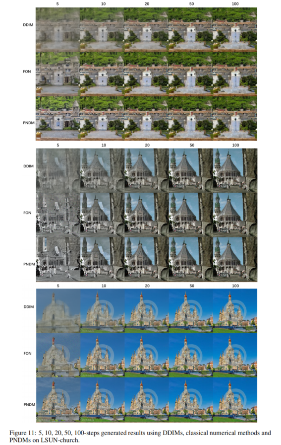 |
|---|
| 图11：使用DDIMs、经典数值方法和PNDMs在LSUN教堂上生成的5、10、20、50、100步的结果 |
| 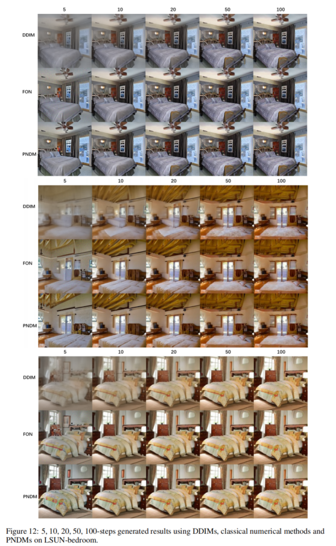 |
|---|
| 图12：使用DDIMs、经典数值方法和PNDMs在LSUN卧室上生成的5、10、20、50、100步的结果 |
A.11更多可视化结果
在此，我们在图13中展示了更多与图4类似的可视化结果。
| 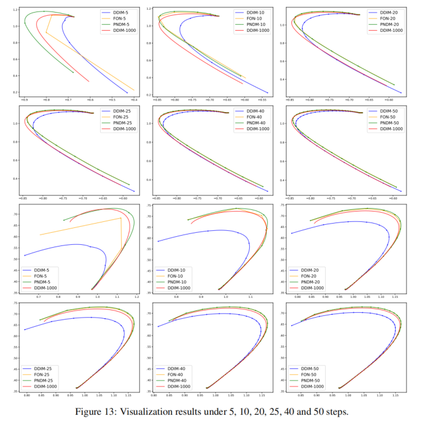 |
|---|
| 图13：5、10、20、25、40和50步下的可视化结果 |
A.12 带有标准差的 FID 结果
在此，我们报告经过四次采样运行测试得到的 FID 结果的均值和标准差。
| 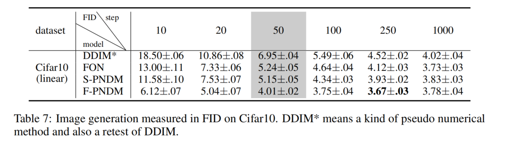 |
|---|
| 表7：在Cifar10数据集上以FID衡量的图像生成结果。DDIM指的是一种伪数值方法，同时也是对DDIM的重新测试。* |
文章总结
这篇论文发表于2022-ICLR，主要是提出了求解常微分方程的梯度部分和转移部分，但我感觉跟原始的龙格-库塔方法或者多步线性方法没有本质的区别，实验结果中显示的也类似。感觉像换了一种说法去描述已经存在的方法。。。
创新点与主要思想
- 通过
不足之处
- 因